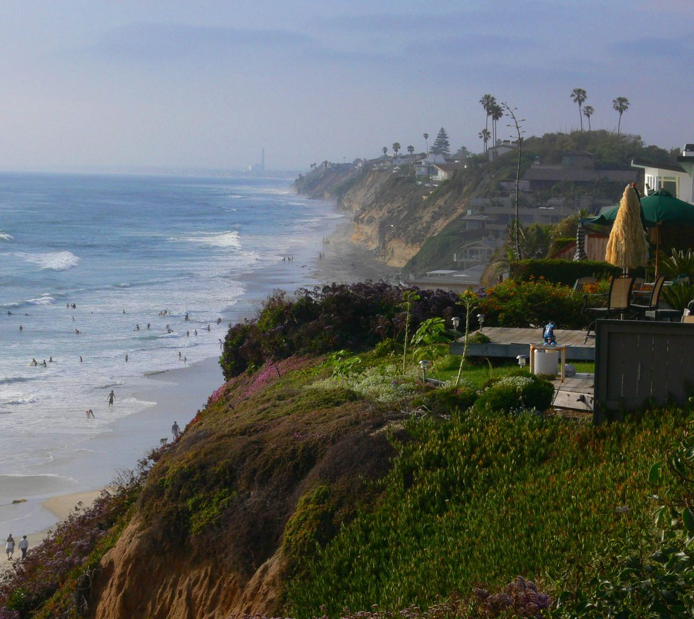
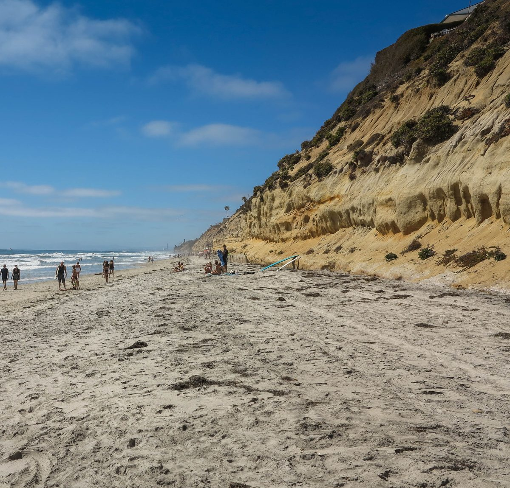
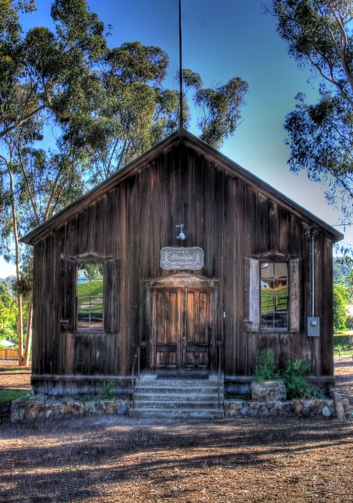
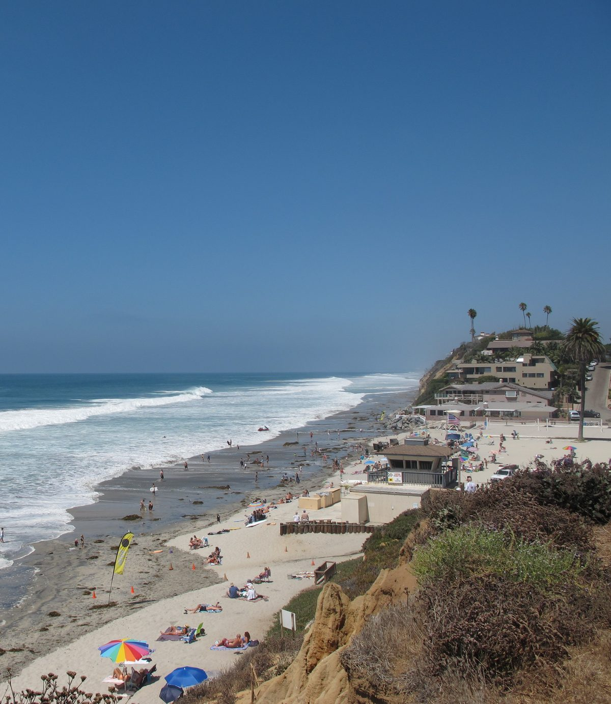
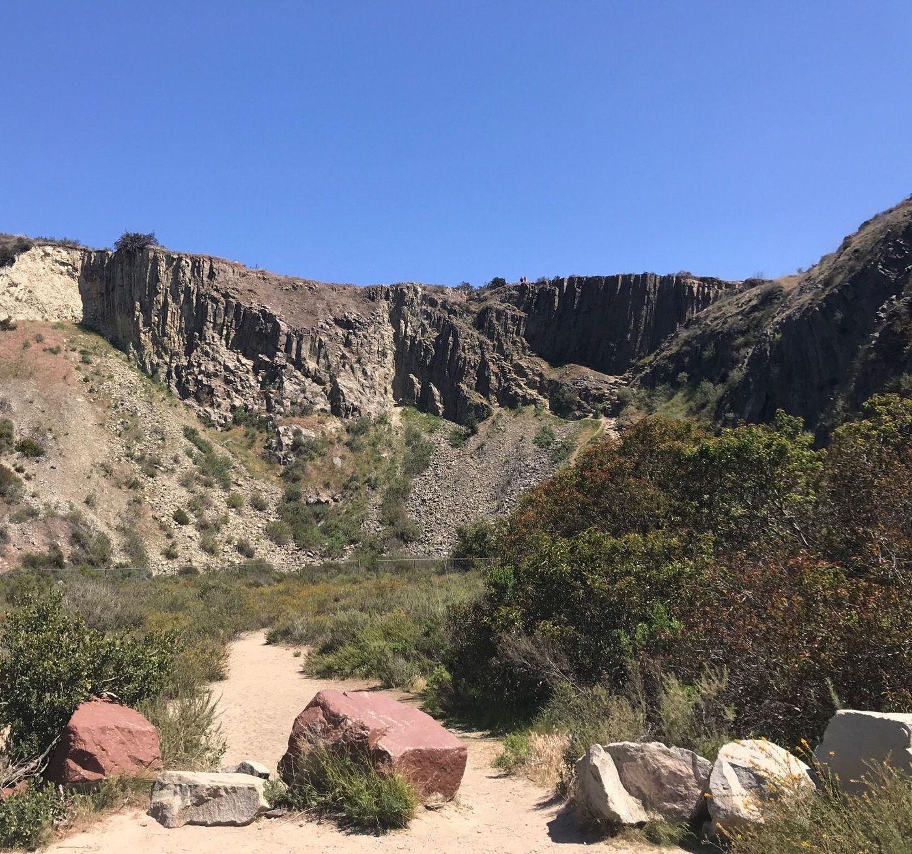
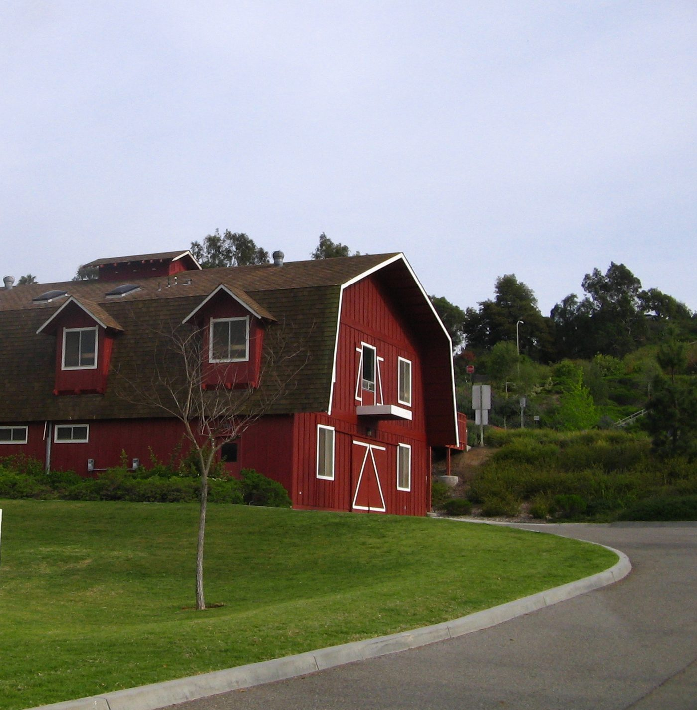
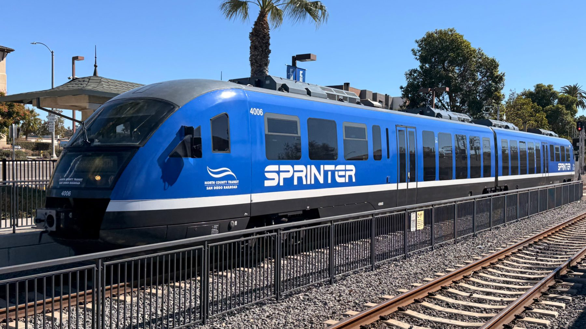

01

Encinitas, San Diego County
Homes in the five communities that became one city in 1986, with saved searches and the things Jim checks before you write an offer.
Encinitas at a glance
Encinitas runs along six miles of the Pacific in northern San Diego County. It became a city in 1986 and counted 62,007 people at the 2020 Census.
Incorporation joined five communities, and the City still uses their names: Leucadia, Old Encinitas, New Encinitas, Cardiff-by-the-Sea and Olivenhain. Most of the city lies inside the Coastal Zone, which is why the City's coastal plan is written into its General Plan. Encinitas is one of the six cities on Jim's North County San Diego page.
Saved searches
Each card opens a live search of MLS listings, updated as they change.

01

02

03

04
<!-- IDX_ZONE: homes-for-sale-encinitas-ca-feed -->
The newest Encinitas listings in one compact row, six to eight homes. Builder places the Showcase hotsheet shortcode here in its compact layout.
Leucadia is the northern part of the city. Its canyons slope down toward La Costa Avenue and the city limit, with Batiquitos Lagoon just beyond. Along North Coast Highway 101, a row of large eucalyptus trees dates from the late 1800s, and the Leucadia Post Office has changed little since it was built in the late 1940s.
Leucadia State Beach, known locally as Beacon's, is a small rocky beach below the bluff off Neptune Avenue, and the City runs it. Building along the highway follows the City's North 101 Corridor Specific Plan.
Old Encinitas is the downtown on Coast Highway 101, under the arched Encinitas sign. Moonlight State Beach, which the City runs, lies west of Interstate 5 at the foot of Encinitas Boulevard, and the Coaster stops at the station on D Street. The Encinitas Downtown Specific Plan governs what is built there.
New Encinitas is the fifth community, and its water service is split: the San Dieguito Water District, which belongs to the City, serves only part of it. Ask Jim which district serves a house before you count on either one.
Cardiff-by-the-Sea borders San Elijo Lagoon and Solana Beach, the city's neighbor to the south. The state made the lagoon an ecological reserve in 1983, and the County of San Diego manages about five miles of trails in it, reached from Manchester Avenue. MiraCosta College has a campus on Manchester.
San Elijo State Beach runs along Coast Highway 101 north of the lagoon mouth, with a campground on the bluff, and Cardiff State Beach lies to the south. Cardiff has its own specific plan, the Cardiff-by-the-Sea Specific Plan.
Olivenhain began in 1884 as a colony of 67 settlers on part of Rancho Las Encinitas. The name is German for "olive grove." Farming declined in the 1950s, and as imported water reached Southern California the area became a residential community. The Olivenhain Municipal Water District, formed in 1959, carries its name.
The City notes that Olivenhain has a more extensive trail network than other parts of Encinitas, and many of its trails are open to horses. Farther inland, the water district runs the Elfin Forest Recreational Reserve, 784 acres with about 11 miles of trails.

Day to day
School information is factual and by district. Always confirm a specific address in the district's school finder.
Questions
Leucadia, Old Encinitas, New Encinitas, Cardiff-by-the-Sea and Olivenhain. They came together as one city when Encinitas incorporated in 1986.
The City lists three: Encinitas Union School District, Cardiff School District and San Dieguito Union High School District. Which ones serve a house depends on the address, so confirm it with San Dieguito's school locator.
The City has issued its own coastal development permits since May 15, 1995, when it took over from the state. Its permit and appeal jurisdiction map shows where the California Coastal Commission still decides.
By road from downtown Encinitas, downtown San Diego is about 26 miles away, San Diego International about 24 miles and John Wayne Airport about 60 miles.
Nearby



Resources
Contact
Tell Jim which of the five communities you are looking in, and he will pull the coastal and fire maps for each address before you go and see it.